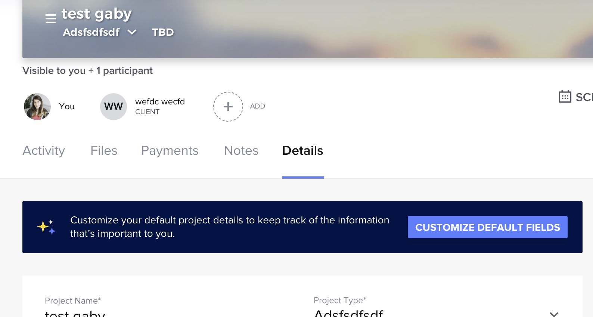
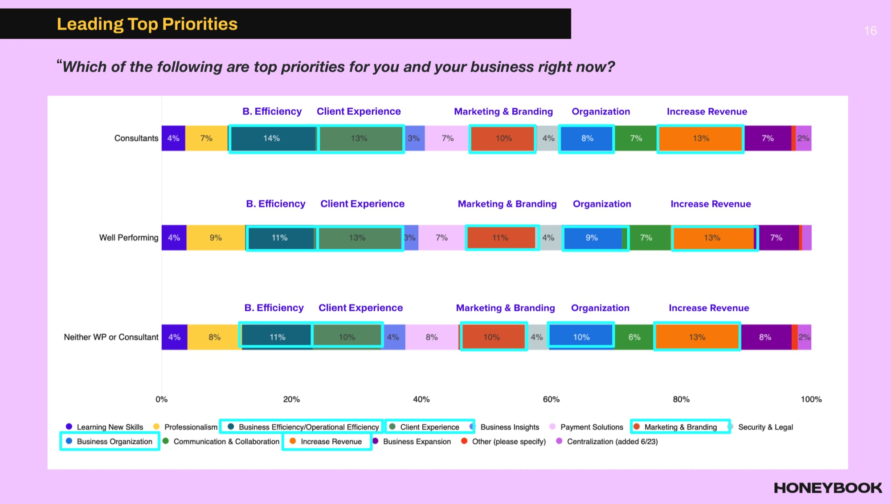
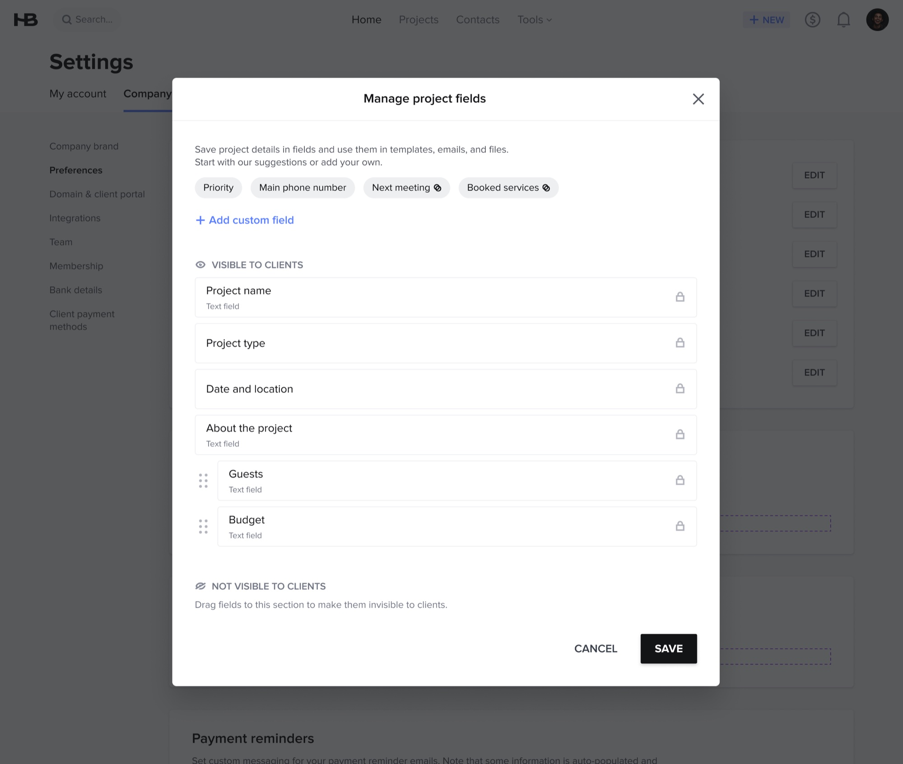
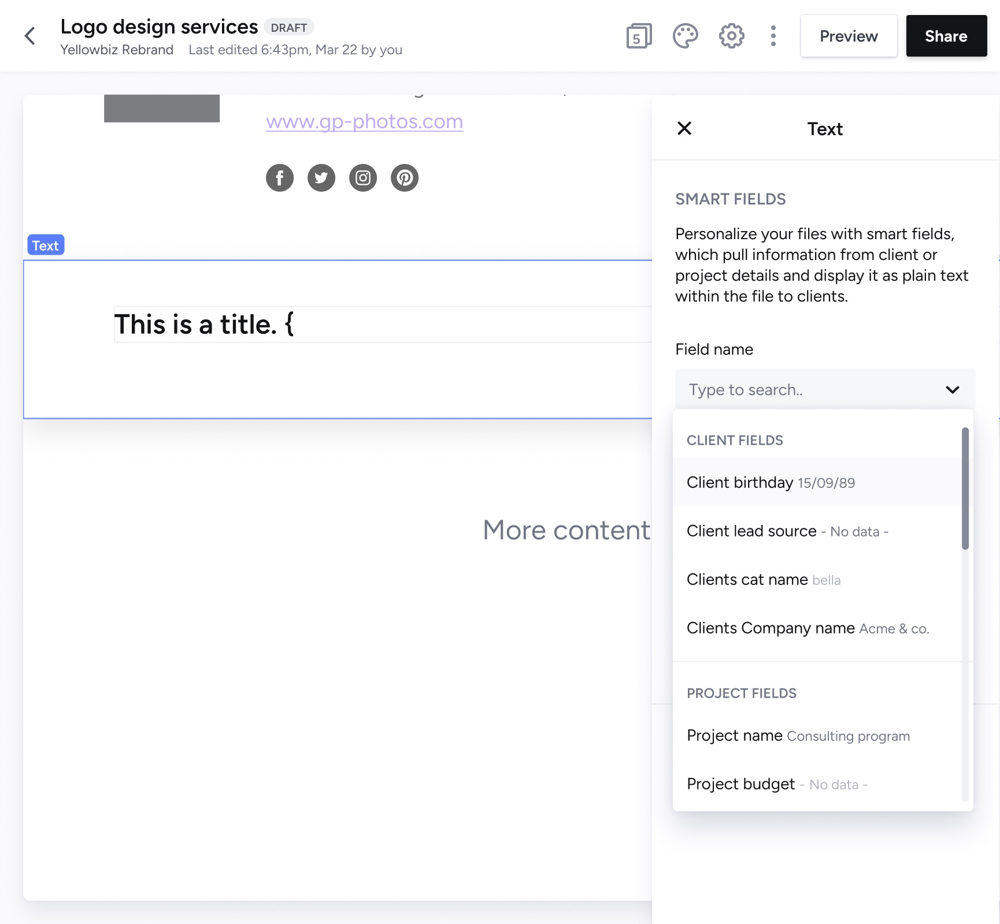

HONEYBOOK · DATA · 2023
Custom Fields
How do you let every business track the details unique to their work, without bloating the product for everyone else?

Manage contact fields, as shipped, with a custom Birthday date field added below the locked defaults. Behind it, the new Data management area in company settings where both field lists live.
CONTEXT
No two service businesses track the same things. A photographer cares about shoot locations; a coach about session counts. HoneyBook's project and contact records were mostly fixed. Projects had a handful of locked default fields, and members could add as many extra fields as they wanted, but only of one type: short text. Contacts had no customization at all. Everything else went into notes and manual workarounds, and the same gap kept surfacing independently across the community: requests to track referrals and important dates, to map intake-form answers into fields, to decide which details a client can see, and simply to add more fields to a contact record.


Before: the customize modal (locked defaults, any added field is short text) and the project Details tab where members filled them in. Contacts had nothing to customize.
The challenge wasn't adding fields. It was making them usable everywhere a member already works, in files, emails and the client portal, while keeping the product simple for the people who don't need them.
The project sat inside a broader theme: improving the sense of customization and control members had over the app. The team was me, a PM, and engineers. The workaround I kept seeing for contacts was the private notes area, where members typed the details they had nowhere else to put: a birthday, a partner's name, how the client found them. Notes don't sort, don't filter, and can't be pulled into a file, so the information was captured and then stranded.
DATA & INSIGHTS
The case for the feature came from member research that predated it. In a survey of 789 members asked how HoneyBook performed against their expectations, customizability and personalization scored 3.4 out of 5, below product quality, support, efficiency and navigation. Members were rating the product well on doing the job, and worse on letting them do it their way.
![Slide titled We are not meeting expectations when it comes to customization and personalization, showing a bar chart of 13 aspects rated by 789 members on a 5-point scale: product quality 3.8, customer support 3.7, efficiency 3.7, navigation 3.5, accessibility 3.5, learnability 3.5, customizability and personalization 3.4, education 3.4, user feedback and iteration 3.0, mobile usability 3.2, collaboration 3.2, integration 3.2, AI integration 3.1. Customizability, user feedback and integration are outlined](../assets/custom-fields/research-expectations.webp)
"To what extent does HoneyBook perform above or below your expectations?" n=789. Customizability and personalization at 3.4/5.

Top business priorities by segment. Efficiency and organization, the two jobs custom fields serve, rank in the top five for every segment.
n=789 member survey
benefit of joining HoneyBook
TO ADD · DATA
- Which study these slides come from (the diary study? an NPS survey?), when it ran, and who ran it. The brief says customization was "one of the top 3 things not meeting expectations", but on this chart it ranks 7th of 13. Either point at the ranking that supports "top 3" or drop that claim; a reader will check.
- The community feedback thread on custom-field use cases: how many responses, and the two or three use cases that shaped the type list.
- If you have it: how many support tickets or feature requests mentioned custom fields before the project.
FRAMING THE SCOPE
The brief asked for custom fields on projects and contacts, up to 25 per entity, with a name and a type, usable as smart fields in contracts, text blocks and emails, and fillable automatically from lead forms. That is a large surface. My first job was deciding what the first release had to contain to be useful, and what could wait.
- Fields are per company, not per account. A team shares one field list, so a field an admin creates appears, empty, on every existing project or contact.
- Five types in V1: text, long text, date, number, link. Selection and multi-select were in the brief but were pushed to V2: they need option management (up to 25 options each, editing, deleting values already in use) that would have doubled the settings UI.
- Visibility is a project concern, not a contact one. Project fields can be shown to the client in the portal; contact fields never are, so the contact modal drops the whole visible/hidden split.
- Managing fields is an admin job. Creating, renaming and deleting fields sits behind admin permissions, in company settings, not inside each project.
TO ADD · FRAMING
- The bullets above are reconstructed from the brief. Confirm which of these were your calls vs. the PM's, and say so in the first person. "I pushed selection to V2 because…" reads senior; a list of requirements does not.
- Was the 25-field cap yours, engineering's, or a product decision? One line on why 25.
- Any constraint that shaped this: legacy data model for project details, the smart-fields system in files, mobile app parity.
DESIGN DECISIONS
Every field needed rules for after creation, since client data doesn't stay static. A renamed field updates everywhere it's already in use rather than breaking silently. A field's type locks once created, so a date field can't quietly become a text field under existing data. Deleting a field clears it from the list but keeps the values already saved on projects, since removing a field shouldn't mean losing a client's history. Default fields, like project name, type, lead source, and date and location, ship locked, so the 25-field cap is headroom for what's actually custom, not a ceiling members hit right away.
Adding a field meant a small, focused decision: name it, then pick a type scoped to what the data actually needs, not a blank spreadsheet cell.

Adding a field: name it, pick a type (text, long text, date, number, or link), and set whether the client sees it.
The old modal had one visibility toggle per row, which put a decision on every field and made the client-facing set hard to read at a glance. The shipped version sorts fields into two sections, visible and not visible, and moves them by drag and drop, so what the client sees is one glance, not a column of eye icons. Suggested fields (priority, main phone number, next meeting, booked services) sit at the top as one-click chips, so a member who has never thought about custom fields gets a starting point instead of a blank form.
To pressure-test that five types were enough, I ran the model against a real job, a member who sends a birthday card and wants the right details ready when they do:
Two of the five wanted a closed list. That was the argument for keeping selection on the roadmap rather than dropping it, and for shipping without it: text covers the job today, and a member's data survives the upgrade because a text field's type never changes underneath them.
TO ADD · DECISIONS
- At least one rejected direction with a screenshot or sketch: e.g. managing fields from inside the project Details tab (where the old banner lived) vs. company settings; a per-row visibility toggle (the old pattern) vs. two sections; a type picker with icons vs. a dropdown. Say what it was, why it lost.
- The edge cases you designed states for: the 25-field limit reached, deleting a field with data in it (confirmation copy?), a renamed field inside an already-sent contract, a required default that a member tries to hide.
- Anything engineering pushed back on and how it changed the design.
- The birthday test above is reconstructed from your earlier draft; confirm it happened the way it reads, or replace it with the real example you used.
WHAT SHIPPED
Two settings modals, one per entity, in company settings under Preferences. Both start with suggested fields, both list the locked defaults with their type, and both let admins drag custom fields to reorder them. Only the project modal carries the visible / not visible split, because only project fields ever reach the client portal.

Manage project fields. The one place the visible / not visible split appears: drag a field into the lower section and the client stops seeing it.
Once created, a field shows up empty on every project or contact, in the project Details tab and the contact record. It also joins the smart-field list in files, text blocks and the email composer, next to the default fields and looking no different, so the data members capture is usable where they write.

A custom field in use: the smart-field picker inside a file lists custom fields (a client's birthday, a cat's name) alongside the defaults, each with its current value.
TO ADD · WHAT SHIPPED
- The contacts table with a custom field as a column, if it shipped in V1 (the brief lists column show/hide and sorting).
- Lead-form auto-population: did it ship in V1? If not, say so; it is the most visible promise in the brief.
- A short screen recording or GIF of drag-to-hide would show the interaction better than the static modal.
ROLLOUT
The feature rolled out in stages, first to 30% of members, then a second milestone to another 30%, before opening to everyone, so edge cases like the delete-but-keep-history behavior surfaced before every member had it.
TO ADD · ROLLOUT
- What actually surfaced in the first 30% that changed something: one concrete bug, copy change, or behavior tweak between milestones.
- Dates or weeks between milestones.
OUTCOME
Shipped a custom-fields system that scales from a solo freelancer to a growing team without overwhelming either: members who never open the settings see nothing new, and members who need it get typed, private-by-default data that follows them into files and emails.
least one custom field
using custom fields
TO ADD · OUTCOME
- Timeframe and method for both numbers: "10K companies within [N] days of full release, from [Amplitude / internal dashboard]". Without a window, 10K is not readable.
- The success metrics the brief named, with a value or an honest "not measured": average custom fields per company, share of auto-populated vs. manually entered values, support case rate, NPS movement on the customization question.
- Which suggested chips got used most, if you have it. It validates the type list and the community input.
- Did selection / multi-select ship later? One line closes the V2 loop.
LOOKING BACK
TO ADD · RETROSPECTIVE
- One unsentimental paragraph. What would you redo: shipping without selection types, putting management in company settings rather than in context, the 25 cap, the drag-to-hide pattern on touch devices?
- What you learned about designing "rules after creation" (rename, lock type, delete-keeps-data) that you carried into later work.